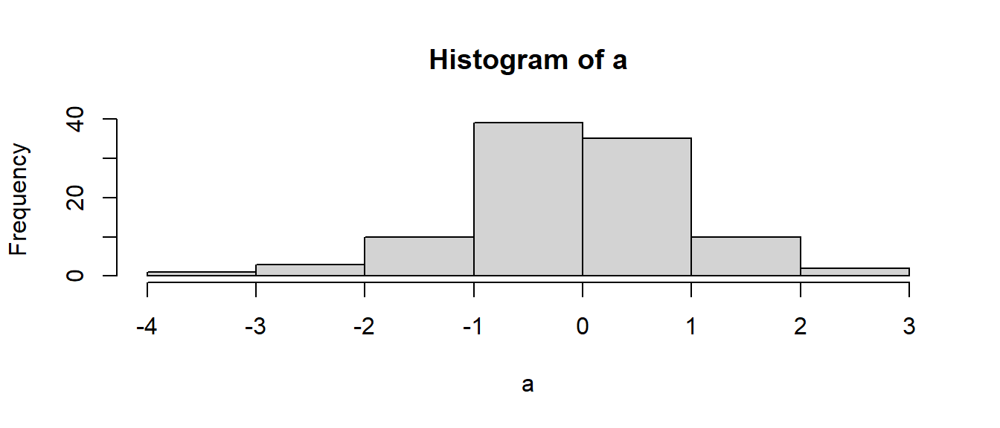
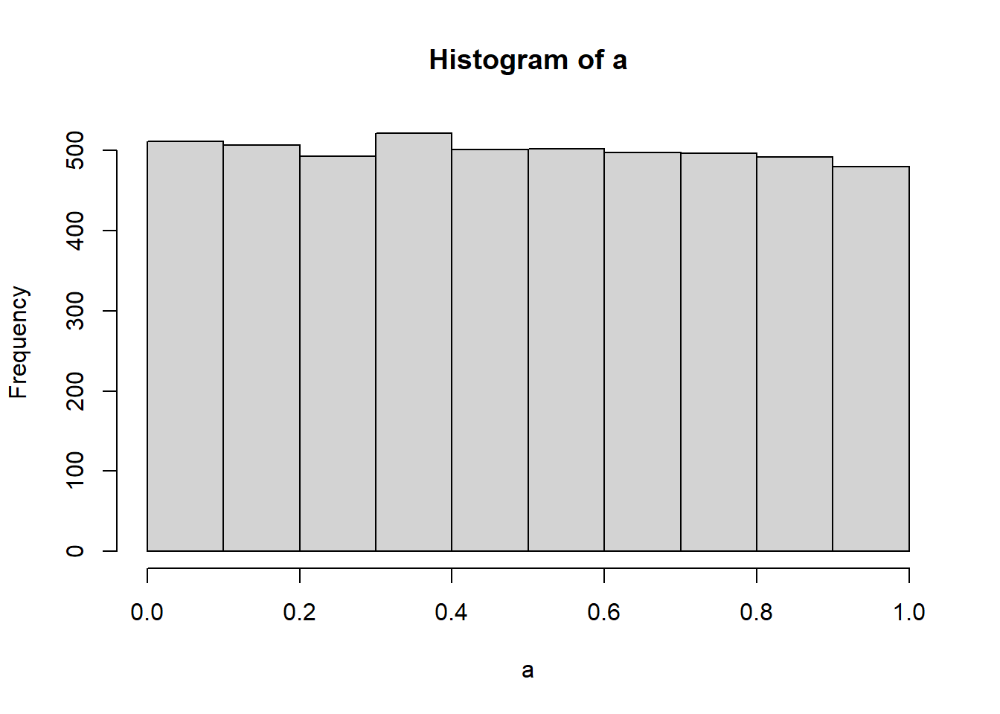
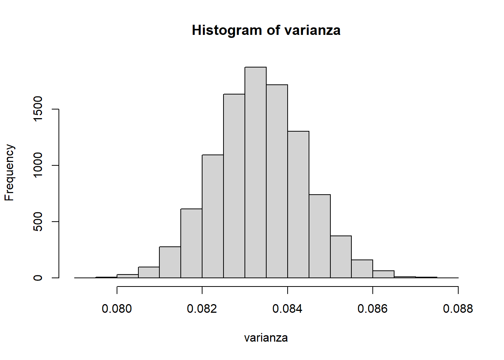

# El operador de asignación es `<-` o `=`:
a <- 1
A <- 2
B = a %% 3
b = TRUE
c = FALSEApéndice A: Introducción a los lenguajes de programación
En este apéndice se ofrece una rápida introducción a los lenguajes de programación que se utilizan en este libro, es decir, R, Python y MATLAB/Octave, con todos los elementos necesarios para poder desenvolverse con comodidad con los paquetes y todos los ejemplos que se utilizan en el libro. Hay muchas otras introducciones menos agresivas y más exhaustivas para quien quiera aprender con mayor detalle los rudimentos de estos potentes lenguajes.
Comandos generales útiles
R
La instalación de R (aquí) y RStudio (aquí) es elemental desde las webs respectivas.
Una vez instalados estos dos elementos básicos, ya se puede utilizar una serie de comandos generales de gran utilidad:
-
install.packagespara instalar paquetes desde el repositorio deCRAN. -
remove.packagespara desinstalar paquetes. -
getwdysetwdpara visualizar y cambiar la carpeta de trabajo por defecto. - El signo de interrogación (
?) delante de cualquier comando muestra su ayuda. -
ls()muestra los objetos en memoria. -
dir()muestra los archivos en la carpeta. -
rmborra objetos de la memoria.rm(list=ls())borra toda la memoria. -
cat("\14")limpia la consola.
Python
La instalación de Python (aquí) es elemental desde la web. Existen muchos entornos de desarrollo integrados (IDE) para manejar Python. Aquí recomendamos PyCharm (aquí).
Python se ha desarrollado con una mentalidad muy flexible, incluso para usarse desde una ventana de comandos en cualquier sistema operativo. Aquí se ofrece una serie de comandos generales de gran utilidad:
-
pip3 install nombre_paquetepara instalar paquetes desde una ventana de comandos del repositorioPyPI. -
pip3 uninstall nombre_paquetepara desinstalar paquetes desde una ventana de comandos. -
os.getcwd()yos.chdir()del paqueteospara visualizar y cambiar la carpeta de trabajo por defecto. Se tienen que importar conimport os. -
print(nombre_funcion.__doc__)para ver la documentación de una función.
MATLAB/OCtave
MATLAB es un programa de pago que ofrece algunas opciones gratuitas y se puede instalar desde la red (aquí). Octave sin embargo es gratuita y corre código que es compatible a grades rasgos con MATLAB (aquí).
Algunos comandos de utilidad son:
-
cdycdpara visualizar y cambiar la carpeta de trabajo por defecto. -
helppara mostrar la ayuda de cualquier función. -
whatmuestra los objetos en memoria. -
dirmuestra los archivos en la carpeta. -
clearborra objetos de la memoria.clear allborra toda la memoria. -
clclimpia la consola.
Tipos de variable
Es importante tener en cuenta que cuando se crean variables, siempre se distingue entre letras mayúsculas y minúsculas.
a = 1
A = 2
B = a // 3
b = True
c = Falsea = 1;
A = 2;
B = a %% 3;
b = true;
c = false;Variables reales:
3/1.6
1/0
0/0
NA
NULL3/1.6
1/0
0/0
import numpy as np
np.nan
None3/1.6
1/0
0/0
nan
% En MATLAB no hay un equivalente a NULL, se suele usar NaNVectores:
Para utilizar vectores y matrices en Python es necesario utilizar algún paquete específico. El más usado es numpy.
MATLAB/Octave no diferencia entre vectores y matrices, en realidad todo son matrices, por lo que es posible definir los vectores como filas o columnas, según convenga en cada caso.
Matrices:
Hipermatrices (matrices de más de dos dimensiones):
Cadenas de caracteres y vectores de cadenas:
"esto es una cadena de caracteres"
nombre = c("Yo", "Tú", "Él", "Ella")"esto es una cadena de caracteres"
nombre = ["Yo", "Tú", "Él", "Ella"]"esto es una cadena de caracteres"
nombre = ["Yo" "Tú" "Él" "Ella"]Frames:
edad = c(10, 20, 30, 40)
DATA = data.frame(nombre, edad)
print(DATA$nombre[3])
print(DATA$edad[3])import pandas as pd
edad = [10, 20, 30, 40]
DATA = pd.DataFrame({'nombre': nombre, 'edad': edad})
DATA["nombre"][2]
DATA["edad"][2]edad = 10 : 10 : 40;
DATA = struct('nombre', nombre, 'edad', edad)
DATA.nombre(3)
DATA.edad(3)Listas:
En MATLAB/Octave las listas se pueden asimilar a las variables tipo cell.
C = [[1, 2, 3], [True, False, True], ["a", "b"]]
print(C)
C[0]
C[1]
C[2]
C[0][1]
C[1][0]
C[2][0 : 2]
type(C)
type(C[0])C = {[1, 2, 3], [true, false, true], ["a", "b"]}
C{1}
C{2}
C{3}
C{1}(2)
C{2}(1)
C{3}(1 : 2)
class(C)
class(C{1})Operaciones con matrices y vectores
Transposición de matrices:
Producto de matrices:
Inversión de matrices:
Diagonal de una matriz:
Comprueba la carpeta de trabajo.
Mira los archivos que hay en el directorio por defecto.
Mira las variables que tienes en memoria.
Borra todas las variables de memoria y comprueba que la memoria está vacía.
Crea dos matrices aleatorias de dimensión 4 x 2 y asígnalas a las variables a y b.
Calcula la matriz transpuesta de b
Calcula a+b, a-b, a*b'
Genera un ruido aleatorio de longitud 3000, procedente de una distribución uniforme.
Calcula la media y la varianza y muéstralas por pantalla.
Modifícala para que la media sea exactamente 0 y la varianza exactamente 1. Comprobar la forma de la distribución con un histograma.
Repite el ejercicio anterior para una distribución N(0, 1).
Borra la ventana de gráficos.
# Carpeta de trabajo.
getwd()
# Archivos en el directorio por defecto.
dir()
# Variables en memoria.
ls()
# Borrar todas las variables y comprobar memoria.
rm(list = ls())
ls()
# Creando dos matrices aleatorias uniformes de dimensión 4 x 2, a y b.
a <- matrix(runif(8), 4, 2)
print(a)
b <- matrix(runif(8), 4, 2)
print(b)
# Transpuesta de `b`.
t(b)
# a+b, a-b, a*b'.
a + b
a - b
a %*% t(b)
# Genera un ruido aleatorio uniforme de longitud 3000.
a <- runif(3000)
head(a)
# Media y la varianza.
cat(paste("Media: ", mean(a), " / Varianza: ", var(a)))
# Modifícando para que la media sea exactamente 0 y la varianza exactamente 1. Histograma.
a <- (a - mean(a)) / sd(a)
cat(paste("Media: ", mean(a), " / Varianza: ", var(a)))
hist(a)
# Repetimos para distribución N(0, 1).
a <- rnorm(3000)
cat(paste("Media: ", mean(a), " / Varianza: ", var(a)))
a <- (a-mean(a))/sd(a)
cat(paste("Media: ", mean(a), " / Varianza: ", var(a)))
hist(a)
# Borrar gráficos.
dev.off()# Carpeta de trabajo.
import os
os.getcwd()
# Archivos en el directorio por defecto.
os.listdir()
# Variables en memoria.
globals().keys()
# Creando dos matrices aleatorias uniformes de dimensión 4 x 2, a y b.
a = np.random.uniform(0, 1, (4, 2))
b = np.random.uniform(0, 1, (4, 2))
# Transpuesta de `b`.
np.transpose(b)
# a+b, a-b, a*b'.
a + b
a - b
np.dot(a, np.transpose(b))
# Genera un ruido aleatorio uniforme de longitud 3000.
a = np.random.uniform(0, 1, (3000))
# Media y la varianza.
print("Media: " + f"{np.mean(a):.4f}" + " / Varianza: " + f"{np.var(a):.4f}")
# Modifícando para que la media sea exactamente 0 y la varianza exactamente 1. Histograma.
a = (a - np.mean(a)) / np.std(a)
print("Media: " + f"{np.mean(a):.4f}" + " / Varianza: " + f"{np.var(a):.4f}")
import matplotlib.pyplot as plt
plt.hist(a)
plt.show()
# Repetimos para distribución N(0, 1).
a = np.random.normal(0, 1, (3000))
print("Media: " + f"{np.mean(a):.4f}" + " / Varianza: " + f"{np.var(a):.4f}")
a = (a - np.mean(a)) / np.std(a)
print("Media: " + f"{np.mean(a):.4f}" + " / Varianza: " + f"{np.var(a):.4f}")
plt.hist(a)
# Cerrar gráficos.
plt.close()% Carpeta de trabajo.
cd
% Archivos en el directorio por defecto.
dir
% Variables en memoria.
whos
% Creando dos matrices aleatorias uniformes de dimensión 4 x 2, a y b.
a = rand(4, 2)
b = rand(4, 2)
% Transpuesta de `b`.
b'
% a+b, a-b, a*b'.
a + b
a - b
a * b'
% Genera un ruido aleatorio uniforme de longitud 3000.
a = rand(3000, 1);
% Media y la varianza.
['Media: ' num2str(mean(a)) ' / Varianza: ' num2str(var(a))]
% Modifícando para que la media sea exactamente 0 y la varianza exactamente 1. Histograma.
a = (a - mean(a)) / std(a);
['Media: ' num2str(mean(a)) ' / Varianza: ' num2str(var(a))]
hist(a)
% Repetimos para distribución N(0, 1).
a = randn(3000, 1);
['Media: ' num2str(mean(a)) ' / Varianza: ' num2str(var(a))]
a = (a - mean(a)) / std(a);
['Media: ' num2str(mean(a)) ' / Varianza: ' num2str(var(a))]
hist(a)
% Borrar gráficos
clfComandos que crean matrices:
Matriz identidad:
Matriz de ceros o unos:
Dimensiones de matrices:
Concatenación vertical y horizontal:
Operadores relacionales:
1 < 2
2 < 1
a = [1, 2, 0]
b = [2, 2, 0]
a < b
1 > 2
2 > 1
a > b
1 <= 2
2 <= 1
1 <= 1
a <= b
1 >= 2
2 >= 1
1 >= 1
a >= b
1 == 1
2 == 1
a == b
1 !=1
2 != 1
a != b1 < 2
2 < 1
a = [1 2 0]
b = [2 2 0]
a < b
1 > 2
2 > 1
a > b
1 <= 2
2 <= 1
1 <= 1
a <= b
1 >= 2
2 >= 1
1 >= 1
a >= b
1 == 1
2 == 1
a == b
1 !=1
2 != 1
a != bOperadores lógicos:
1 < 2 && 2 == 1
1 < 2 && 2 < 3
a < b && b >= 0
1 < 2 | 2 < 1
a < b | b >= 0
!(1 < 2)
!(1 < 2 && 2 == 1)1 < 2 and 2 == 1
1 < 2 and 2 < 3
a < b and b >= 0
1 < 2 or 2 < 1
a < b or b >= 0
!(1 < 2)
!(1 < 2 and 2 == 1)1 < 2 && 2 == 1
1 < 2 && 2 < 3
a < b && b >= 0
1 < 2 | 2 < 1
a < b | b >= 0
~(1 < 2)
~(1 < 2 && 2 == 1)Archivos scripts y funciones
Una de las ventajas de estos lenguajes es que pueden utilizarse sin necesidad de introducir los comandos uno a uno en la consola, para ello se pueden utilizar dos tipos de archivos:
- Archivos de comandos (script). Son sencillamente un conjunto de comandos de cada lenguaje aglutinados en un fichero con extensión adecuada (
.Rpara R,.pypara Python y.mpara MATLAB/Octave. Estos archivos se puede ejecutar desde la consola. - Funciones. Son en realidad comandos escritos en un fichero con la extensión adecuada y que tienen una cierta unidad. Cada función es un objeto, y se pueden almacenar varias funciones en un solo archivo, excepto en MATLAB/Octave, que tiene que almacenarse cada función en archivos separados. Lo que distingue una función de un script es que la función tiene una sintaxis determinada y definen un trozo de código independiente que realiza una tarea concreta, Todas las variables definidas en una función son locales, es decir, están definidas mientras se ejecuta la función y solo son accesibles desde dentro de la función. Las funciones se comunican con el resto del código mediante las entradas y una única salida.
La sintaxis general de funciones en cada lenguaje es la siguiente:
Nombre <- function(entrada1=valor_defecto1, entrada2=valor_defecto2,
...){
# Comandos
return(salida)
}def Nombre(entrada1=valor_defecto1, entrada2=valor_defecto2, ...):
# Comandos
return salida1, salida2, ... function [salida1, salida2, ...] = Nombre(entrada1, entrada2, ...)
# Comandos
endPropiedades:
- Las funciones R solo tienen una salida. Los demás lenguajes permiten varias salidas de cualquier tipo.
- Los objetos definidos dentro de la función son locales.
- Las funciones suelen llamar a otras funciones, e incluso pueden llamarse a sí mismas. Esta característica hay que utilizarla con mucho cuidado, pues se entra con facilidad en bucles infinitos.
- Es muy útil definir valores por defecto de las entradas, siempre que sea posible.
Escribe una función que se llame generar para generar números aleatorios de una distribución normal. La función debe tener como argumento de entrada la dimensión del vector y debe devolver como argumento de salida el vector aleatorio. Prueba la función para generar vectores aleatorios de dimensión 10, 100, 1000 y 10000.
## Media: -0.465952425454804 / Varianza: 1.10432621445651## Media: -0.102445117083682 / Varianza: 1.07330804589228
## Media: -0.000774454870652572 / Varianza: 1.02527041360597## Media: -0.0114210270928876 / Varianza: 0.999263792078524def generar(n = 3000):
a = np.random.normal(0, 1, (n))
print("Media: " + f"{np.mean(a):.4f}" + " / Varianza: " + f"{np.var(a):.4f}")
plt.hist(a)
return a
a = generar(10)
a = generar(100)
a = generar(1000)
a = generar(10000)function a = generar(n)
if nargin < 1
n = 3000;
end
a = randn(n, 1);
['Media: ' num2str(mean(a)) ' / Varianza: ' num2str(var(a))]
hist(a)
end
a = generar(10);
a = generar(100);
a = generar(1000);
a = generar(10000);Bifurcaciones
A menudo interesa que, dependiendo de determinadas condiciones, se ejecute una parte de código o bien otra diferente. Para ello se utilizan las bifurcaciones. La sintaxis es:
if (condición1){
# Comandos cuando la condición1 es cierta
} else if (condición2){
# Comandos cuando la condición2 es cierta
...
} else if (condiciónN){
# Comandos cuando la condiciónN es cierta
} else{
# Comandos si ninguna de las anteriores es cierta
}if condición1:
# Comandos cuando la condición1 es cierta
elif condición2:
# Comandos cuando la condición2 es cierta
...
elif condiciónN:
# Comandos cuando la condiciónN es cierta
else:
# Comandos si ninguna de las anteriores es ciertaif condición1
# Comandos cuando la condición1 es cierta
elseif condición2
# Comandos cuando la condición2 es cierta
...
elseif condiciónN
# Comandos cuando la condiciónN es cierta
else
# Comandos si ninguna de las anteriores es cierta
endEjemplo:
i = 1
if i == 1:
print('i vale' + i)
i = 0
if i == 1:
print('i vale 1')
else:
print('i no vale 1')i = 1;
if i == 1
['i vale ', num2str(i)]
i = 0;
if i == 1
['i vale 1']
else
['i no vale 1']
endBucles for y while
Se utilizan para repetir una tarea un número de veces. Los bucles se pueden anidar. La sintaxis es:
for (variable in conjunto){
# Comandos que se repiten
}for variable in conjunto:
# Comandos que se repitenfor variable = conjunto
% Comandos que se repiten
endEjemplo:
En los bucles tipo while debe asegurarse que la condición se incumple en algún caso para evitar caer en un bucle infinito. Sintaxis:
::: panel-tabset ## R
while (condición){
# Comandos cuando la condición es cierta
# Cambio para que no se cumpla la condición y se acabe bucle
}Python
while condición:
# Comandos cuando la condición es cierta
# Cambio para que no se cumpla la condición y se acabe bucleMATLAB/Octave
while condición
% Comandos cuando la condición es cierta
% Cambio para que no se cumpla la condición y se acabe bucle
end¿Cuál es la diferencia entre estos dos comandos?
# Python
i = 1
while i == 1:
print("Esta condición es cierta")
if i == 1:
print("Esta condición es cierta")# MATLAB/Octave
i = 1;
while i == 1
['Esta condición es cierta']
if (i == 1)
['Esta condición es cierta']La primera condición (con while) produce un bucle infinito, puesto que la condición siempre es cierta.
La segunda condición (if) simplemente mostrará por pantalla el la cadena Esta condición es cierta, puesto que se cumple la condición, pero lo hará una sola vez.
Escribe una función generar2 basada en la creada anteriormente a la que añades un segundo argumento de entrada que indique el tipo de distribución que quiera el usuario. Este argumento de entrada se llamará dist y será una cadena de caracteres que tomará dos valores, unif para distribuciones uniformes o norm para una distribución gaussiana. Elimina todas las salidas por pantalla.
Pruébala generando vectores aleatorios de dimensión 5.000 de las dos distribuciones.
def generar2(n = 3000, dist = "unif"):
if dist == "unif":
a = np.random.uniform(0, 1, (n))
} else {
a = np.random.normal(0, 1, (n))
}
return a
}
a = generar2(5000, "unif")
hist(a)
a = generar2(5000, "pp")
hist(a)function a = generar2(n, dist)
if nargin < 1
n = 3000;
end
if nargin < 2
dist = 'unif';
end
if (dist == 'unif'){
a = rand(n, 1);
else
a = randn(n, 1);
end
end
a = generar2(5000, 'unif')
hist(a)
a = generar2(5000, 'pp')
hist(a)EXPERIMENTO DE MONTECARLO: Calcula 10.000 medias y varianzas de muestras aleatorias de longitud 5.000 de una distribución uniforme. Almacena las medias en el vector media y las varianzas en el vector varianza.
TEOREMA CENTRAL DEL LÍMITE: Muestra que la distribución empírica de la media muestral es normal. Muestra además la distribución de la varianza muestral.


N = 10000
media = np.full(0, (N))
varianza <- media
for i in range(N):
y = generar2(5000, "unif")
media[i] = mean(y)
varianza[i] = var(y)
hist(media)
hist(varianza)N = 10000;
media = repmat(0, N, 1);
varianza = media;
for i = 1 : N
y = generar2(5000, "unif");
media(i) = mean(y);
varianza(i) = var(y);
end
hist(media)
hist(varianza)Ejercicio avanzado
Escribe una función fact que calcule el factorial de un número y comprueba que funciona con varios ejemplos.
Escribe otra función fact2 en la que se llame a sí misma, teniendo en cuenta que \(n! = n (n - 1)!\). Recuerda que para evitar llamadas infinitas hay que poner una condición de parada.
def fact(n):
resultado = 1
for i in range(2, n):
resultado = resultado * i
return resultado
def fact2(n):
if n == 2:
resultado = 2
else:
resultado = n * fact2(n - 1)
return resultado
fact(5)
fact2(5)function resultado = fact(n)
resultado = 1;
for i = 2 : n
resultado = resultado * i;
end
function resultado = fact2(n)
if n == 2
resultado = 2;
else
resultado = n * fact2(n - 1);
end
fact(5)
fact2(5)